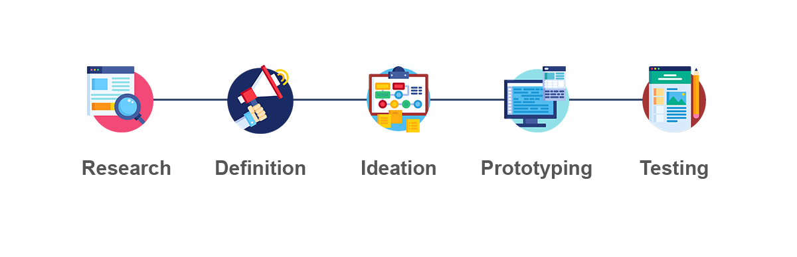

.png)

Brief Process:
This mobile app case study was constructed to help get a better understanding of the UX/UI design process through a 5 step process: Research, Define, Ideate, Prototype, and Test. Working with a group to form a seemingly new app service idea, we collaborated and worked individually throughout the entire process.
My Role:
UI Designer - I worked with three colleagues and was involved throughout the entire process, but led the Prototpe and Testing phases.
Tools Used:Figma, Photoshop, Miro
Design Process
The design thinking process is iterative, flexible, and focused on collaboration between designers and users.
.PNG)
.png)
To begin our research process, we first wanted to learn more about our primary user. Defining this persona before gathering user research was beneficial in creating quality interview questions for the people we wanted to get insight from. We settled on Valerie who is a busy mother that enjoys throwing parties, but doesn't really have the time to spend on the preparation and clean-up.
We then created a plan and interviewed 5 potential users in order to obtain some qualitative feedback. We also created a survey that we shared on social media so we could gain quantitative feedback.
.PNG)
.png)
.png)
To start off our Ideation Phase, we expanded on the journey of our user and created a visual representation to better help understand the emotions our user could potetionally go through during the process of interacting with Parti.
We used the I like, I wish, What if method to brainstorm features that will help solve our user’s problem. This was also important in overcoming scope creep and not making things too complicated. During our brainstorming session we used Miro to throw ideas up on a 2x2 priority matrix to determine which features we should start creating.
.PNG)
.png)
Now that we understood our user's journey, as well as defined our main features, we moved on to creating a User Flow. Again, this was very necessary to help us keep on track with our main priorties and not run off into areas and features that were not necessary at this time. We originally stuggled with overcomplicating the process, but after receiving outside advice and feedback, we were able to backtrack and simplify the user flow.
We then took everything that we had researched and planned before and translated those ideas into sketched wireframes. Three different people sketched out their vision and then presented to the whole group for feedback and to decide which design route to go.
.PNG)
.PNG)
We started the testing phase by creating a usability testing plan with three tasks for users to complete. We wanted to locate areas of friction and confusion while using the prototype so that we could iterate and improve the user experience.
These tests helped us identify these problems: